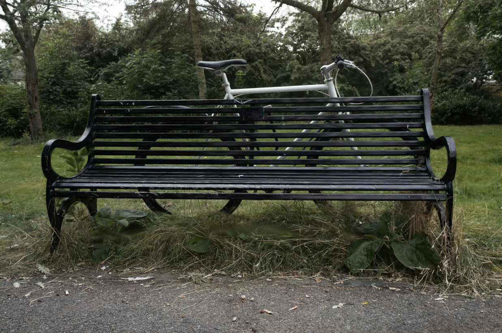
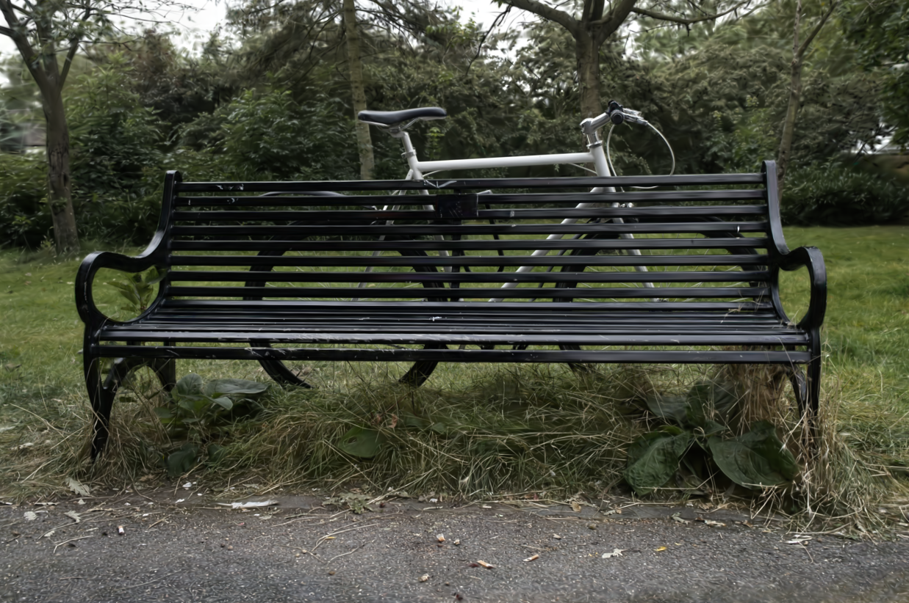
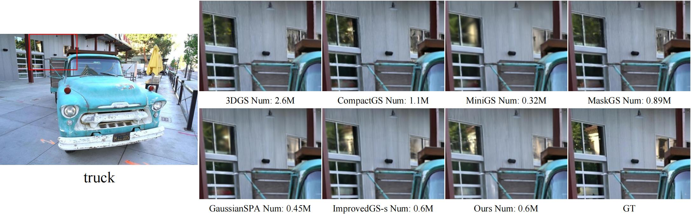
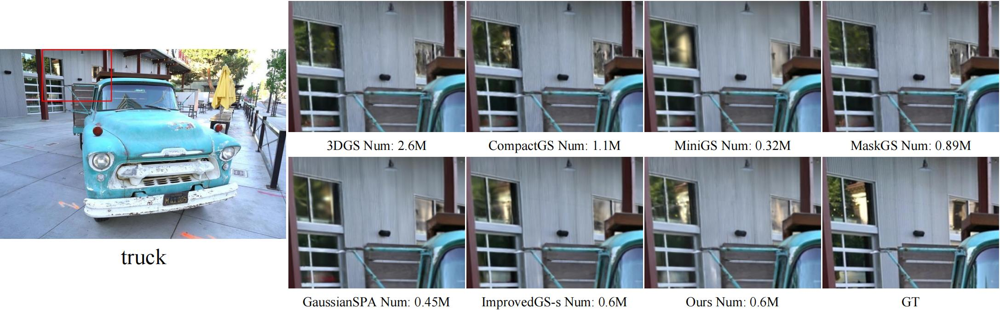

Qualitative comparison with 3DGS



3DGS employs a large number of Gaussian primitives to fit scenes, resulting in substantial storage and computational overhead. Existing pruning methods rely on manually designed criteria or introduce additional learnable parameters, yielding suboptimal results. To address this, we propose an natural selection inspired pruning framework that models survival pressure as a regularization gradient field applied to opacity, allowing the optimization gradients—driven by the goal of maximizing rendering quality—to autonomously determine which Gaussians to retain or prune. This process is fully learnable and requires no human intervention. We further introduce an opacity decay technique with a finite opacity prior, which accelerates the selection process without compromising pruning effectiveness. Compared to 3DGS, our method achieves over 0.6 dB PSNR gain under 15% budgets, establishing state-of-the-art performance for compact 3DGS.
 

Referencing the training acceleration tricks used in FastGS, we also provide a fast-training version for everyone to use, named FastSplatting. Compared to FastGS, our method achieves superior rendering quality with similar training time.
@misc{
}